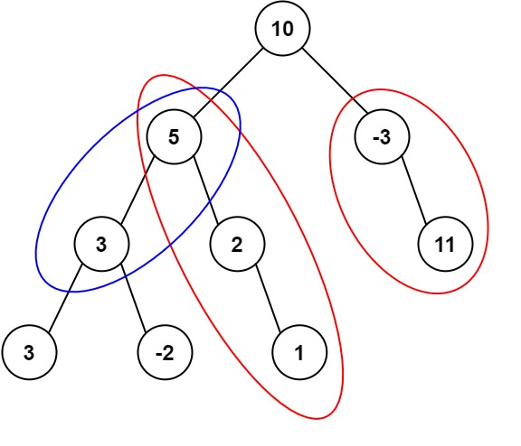

437. 路径总和 III
前缀和 + 哈希计数：从根往下累加 cur，以 node 结尾的 target 路径数 = 旧前缀 cur−target 的个数；回溯时把当前前缀撤销。
思路
cnt记「前缀和 → 出现次数」，先放cnt[0] = 1：从根出发的路径也要能配上。- 走到
node：cur += node.val；以它结尾、和为target的路径，等于前缀cur减去某个旧前缀后剩target，所以查cnt[cur - target]。 - 查完把
cur计数 +1 再递归子树；回溯时必须把cur的计数撤销，否则左支路的前缀会被右支路误配上（跨支路的路径不存在）。 - 结点值可达 ±10⁹、路径长可达 10³，前缀和用
long存。
图解
最优解
1import java.util.*;2 3class Solution {4 public int pathSum(TreeNode root, int targetSum) {5 // cnt：前缀和 → 出现次数；先放空前缀 0，从根出发的路径才配得上6 Map<Long, Integer> cnt = new HashMap<>();7 cnt.put(0L, 1);8 return dfs(root, 0L, targetSum, cnt);9 }10 11 // cur：根到 node 的前缀和；返回这棵子树里贡献的合法路径数12 private int dfs(TreeNode node, long cur, int target, Map<Long, Integer> cnt) {13 if (node == null) return 0;14 cur += node.val;15 // 以 node 结尾、和为 target 的路径数 = 旧前缀 cur-target 的个数16 int hits = cnt.getOrDefault(cur - target, 0);17 cnt.merge(cur, 1, Integer::sum);18 hits += dfs(node.left, cur, target, cnt);19 hits += dfs(node.right, cur, target, cnt);20 // 回溯撤销：这条支路的前缀不能被别的支路配上21 cnt.merge(cur, -1, Integer::sum);22 return hits;23 }24}题目
给定一个二叉树的根节点 root ，和一个整数 targetSum ，求该二叉树里节点值之和等于 targetSum 的 路径 的数目。
路径 不需要从根节点开始，也不需要在叶子节点结束，但是路径方向必须是向下的（只能从父节点到子节点）。
示例 1：

输入：root = [10,5,-3,3,2,null,11,3,-2,null,1], targetSum = 8 输出：3 解释：和等于 8 的路径有 3 条，如图所示。
示例 2：
输入：root = [5,4,8,11,null,13,4,7,2,null,null,5,1], targetSum = 22 输出：3
提示:
- 二叉树的节点个数的范围是
[0,1000] -109 <= Node.val <= 109-1000 <= targetSum <= 1000
题面取自力扣当前版本。
数据快照 2026-11-04。题面版权归力扣所有，本站点仅供本人学习使用，请勿对外发布。